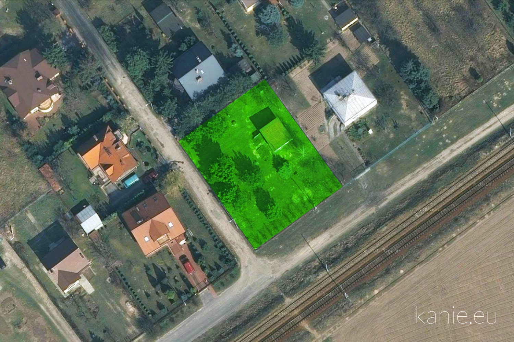

Piękna działka budowlana 1048 m² w spokojnej okolicy domów jednorodzinnych ze świetnym dojazdem do centrum Warszawy. Położona w Kaniach (Powiat Pruszkowski, Gmina Brwinów), między Podkową Leśną a Komorowem, 19 km od Warszawy, bardzo blisko stacji kolejki WKD Kanie Helenowskie.
Cena: 385 000 zł
Działka budowlana:
- 1048 m², 36 × 29 m, narożna
- Ogrodzona i uzbrojona
- Na działce rosną piękne krzewy i drzewa (w tym owocowe)
- Domek letniskowy (30 m² + piwnica; domek może służyć jako miejsce noclegu lub trzymania rzeczy w trakcie budowy domu)
- Księga Wieczysta, jeden właściciel
- Dostępna od zaraz

Wszystkie media:
- Prąd (podłączony) i gaz (na terenie)
- Kanalizacja i woda miejska (w ulicy)
- Możliwość podłączenia internetu i telefonu (kierunkowy warszawski: +48 22)
- Własna studnia
Świetny dojazd:
- Przystanek WKD Kanie Helenowskie w odległości 550 m (5 minut pieszo)
- Dojazd kolejką do Dworca Centralnego w 35 minut
- Dojazd samochodem do centrum Warszawy w 30 minut
- Dojazd na działkę drogą asfaltową
- Przystanek PKS w Kaniach
Piękna okolica:
- Las, rzeka, łąki, tereny rekreacyjne
- Blisko sklepy (500 m), restauracja, żywność ekologiczna
- Klub jeździecki, stadnina koni, agroturystyka
- Przedszkola i żłobki w sąsiednich Otrębusach i Komorowie
{kind=link}
{kind=link}
{kind=link}